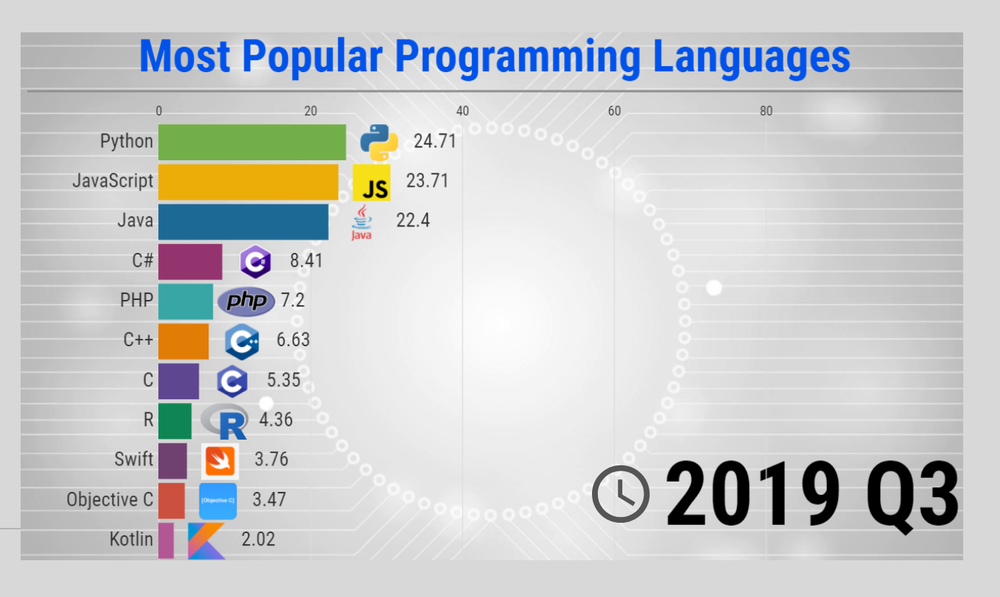

AP Exam Weighting: 2.5-5%
The purpose of this unit is to introduce students to the object-oriented programming language, Java. Additionally, it consists of the basic necessities for progressing through the rest of this course. These necessities range from primitive types like booleans and doubles all the way to what variables are and how they work.
If needed, you can use the compiler at the end of each page to experiment with code (but it won't save if closed/refreshed)
1.1 - Why Programming? Why Java?
Programming is pretty much required for almost all pieces of technology to operate and within programming, there are many different languages that are used to accomplish this. In this course, we are going to be covering Java, one of the most popular programming languages around the world. Java is an object-oriented programming language, which basically means that it utilizes different classes, objects, and functions in order to operate at its fullest potential. If that doesn't really make sense, don't worry, that is what this course is for.

public class Main {
public static void main(String[] args) {
System.out.print("no ln");
System.out.println("ln");
}
}
Each java file always end in .java. Its name has to be the same as whatever you set the name to in the actual code so in this case, the file would be named Main.java. After declaring the name of the file, you would simply add {} in order to incapsulate the contents within the actual class. For everything within a new set of {}, you would add an indent. While it isn't exactly required for the program to run, it makes interpreting and fixing code a lot easier in the future. For now, we will just add public static void main(String[] args) {} in order to get the code working. We will cover what each part of that statement means later on. As of right now, we will let you run your first piece of code. By adding System.out.print("hello"); or System.out.println("hello");, we wll be able to output a string that has the contents of "hello" into the terminal. However, there is definitive difference between System.out.print(); and System.out.println();
System.out.print("hello") - prints hello into the terminal without starting a new line
System.out.println("hello") - prints hello into the terminal and then moves the cursor to a new line
Reminder: You can test these out using your own IDE or with the provided compiler at the end of the page.
1.2 - Variables and Primitive Data Types
Primitive data types are known as the different kinds of information that a programming language takes in to operate. These kinds of information are categorized under different terms. The three basic primitive data types used throughout the entirety of this course are known as Int, Double, and Boolean.
Int - numbers represented as integers(-1, 5, 200, etc.)
Double - numbers represented as decimals(-0.1, 3.5324, 3289.9, etc.)
Boolean - true or false
In addition to primitive data types, variables are also very important. Variables are a way of storing data under a reference in order to make it easier to access. In order to declare a variable, you need to do the following:
dataType variableName = variableValue;
int daysInYear = 365;
When naming variables, it is good practice to write them in a format known as Camel Case. For this format, if your variable name is more than 1 word, you would simply uncapitalize the entirety of the first word and then capitalize the first letter of every word that comes after(as shown in the example). Additionally, make sure that there are no spaces separating each word and make sure to name your variables with meaningful names rather than just random letters like x, y, or z. By keeping a consistent pattern that many people follow, it makes understanding not only your own code, but other people's codes, a lot easier.
int daysInYear = 365;
private int daysinWeek = 7;
protected int daysinLeapYear = 366;
public int hoursInDay = 24;
When declaring variables, you can add something known as an access modifier to the start of the declaration. Since java is an object-oriented programming language, we need a good way to distinguish which variables should and shouldn't be able to be accessed between different classes. Look at the following table to see how each access modifier allows different sets of permissions.
| Modifier | Class | Package | Subclass | Global |
|---|---|---|---|---|
| Public | Yes | Yes | Yes | Yes |
| Protected | Yes | Yes | Yes | No |
| Default | Yes | Yes | No | No |
| Private | Yes | No | No | No |
import java.util.Scanner;
public class Main {
public static void main(String[] args) {
Scanner input = new Scanner(System.in);
System.out.println("Enter an int: ");
int inputNumber = input.nextInt();
System.out.print("Int that was entered was");
System.out.println(inputNumber);
input.nextLine();
System.out.println("Enter a String: ");
String inputString = input.nextLine();
System.out.print("String that was entered was");
System.out.println(inputString);
}
}
In java, a simple way to receive an input from the user is with the Scanner class. In order to use the Scanner class, we first need to import java.util.Scanner. When importing, you should put them at the very top of the java file so it is more organized. After importing, create a scanner object by using the Scanner variableName = new Scanner(System.in); Then, you can any of the following in order to ask for a certain input:
public int variableName = scannerName.nextInt() - requests an int from the user
public double variableName = scannerName.nextDouble() - requests a double from the user
public boolean variableName = scannerName.nextBoolean() - requests a boolean from the user
public String variableName = scannerName.nextLine() - requests a string from the user
Once any one of these commands run, the user will need to input an answer relative to the primitive type that is requested and then press enter in the terminal. After that, the variable name that the user set the input to will then contain the value that was inputted. You can copy and paste the example just above this section into the compiler at the end of the page, edit it if needed, and test it out. In order to put in an input at the compiler at the bottom, press the gear icon at the bottom right and select custom Custom Input. Then, put in both of your inputs(or however many inputs you asked the code for). If you are running your code on an IDE, you can simply just type into the terminal and press enter.
1.3 - Expressions and Assignment Statements
Expressions and assignment statements simply represents all mathematical expressions that change at least two data types. This includes additon, subtraction, division, multiplication, and an additional operator known as modulo. Modulo simply just outputs the remainder when a number is divided by another number. Look at the following example for a reference.
double addition = 2.1 + 0.1;
double subtraction = 13.8 - 2.2;
double multiplication = 2.5 * 3;
double division = 10 / 4.0;
int modulo = 10 / 4;
Each variable will now contain the following values:
addition = 2.2
subtraction = 11.6
multiplication = 7.5
division = 2.5
modulo = 2
When declaring the variable, make sure to use the correct primitive types. If we were to run the command, int division = 10 / 4;, the variable division would
have a value of 2, and not 2.5, due to the following two conditions.
A. The variable was declared as an int(ints only represent integers, not decimals)
B. The variable was set equal to two ints dividing. One of the ints must be converted to a double simply adding a '.0' to the end of it(change 4 to 4.0);
When using these expressions, they still follow the normal order of operations(PEMDAS). Even if it may not be necessary to use parenthesis in certain cases due to it yielding the same result, it may still be good practice to do so whenever it comprises of a lot of different mathematical expressions so it would be easier to comprehend by others.
1.4 - Compound Assignment Operators
Compound assignment operators represent simple shortcuts to mathematical expressions that are commonly used. Look at the following two example:
int number1 = 3;
number1 = number1 * 3;
int number1 = 3;
number1 *= 3;
Both of these examples will lead to the variable, number1, containing the number 9. You can use this kind of shortcut for all of the mathematical expressions that were shown in the previous lesson. (+=, -=, *=, /=, %=)
Another set of common operators are known as the decrement and increment. Look at the following example:
int number2 = 1;
number2 += 1;
int number2 = 1;
number2++;
int number2 = 1;
System.out.println(number2++);
System.out.println(++number2);
Within the first two set of commands, number2 will result in a value of 2. This example represents incrementing and you can do the same thing with decrements(number2--), which will subtract from number2. However, it isn't that simple. If we were to put the operators after the variable name, they are known as post-increments/post-decrements. This basically represents that if the use of the operators are within another command, it will run that command first and then run the increment/decrement. The opposite is true with pre-increments/pre-decrements. If we were to put the operators before the variable name, it would add/subtract 1 first and then run the outer command. Look at the third set of commands. If the command, System.out.println(number2++); were to run, it will simply print out 1. This is because it prints out the value of number2 first and then adds 1, so the value of number2 is now 2. If the next command, System.out.println(++number2);, were to run, it would print out 3. This is because prior to that specific line running, the value of number2 was 2. After running that command, the number2 would first add 1(making it now 3), and then prints it out into the terminal.
1.5 - Casting and Ranges of Variables
Since doubles and ints can be pretty complicated, java allows for something called casting. Casting consists of turning an primitive type to a different variable type. This is most commonly used on integers and doubles due to how weird they can be.
double add = 3 + 5;
int add2 = 3 + 2.0;
For the first command, add would be set to 5.0. This is because the variable was set as a double, which represents 8 bytes, you can easily expand an int. However, this isn't the case with the second command. The second command would lead to the program not compiling at all. This is because when you initiate the variable as an int, only 4 bytes are available to represent the number. However, you set it to 5.0, which is a double that represents 8 bytes. It is impossible to represent a double in 4 bytes but it is possible to represent an int in 8 bytes. This is where casting comes in.
int add2 = (int) (3 + 2.0);
int add2 = 3 + (int) 2.0;
Any of these solutions would work perfectly find to get the program to compile. A good rule of thumb is to make sure that you are either casting the end result or the double that is causing the problem. For the first solution, if you were to get rid of the second pair of parenthesis with the addition in it, the code wouldn't compile since you would technically be casting the 3 into an int(which doesn't do anything).
Something to keep in mind is that when casting a double to an int, it doesn't automatically round for you. For example, 4.8 casted to an int would result in a 4. A workaround for this is whenever you are trying to round a positive double<, add 0.5 and then cast it into an int. For negative doubles, subtract 0.5 and then using casting.